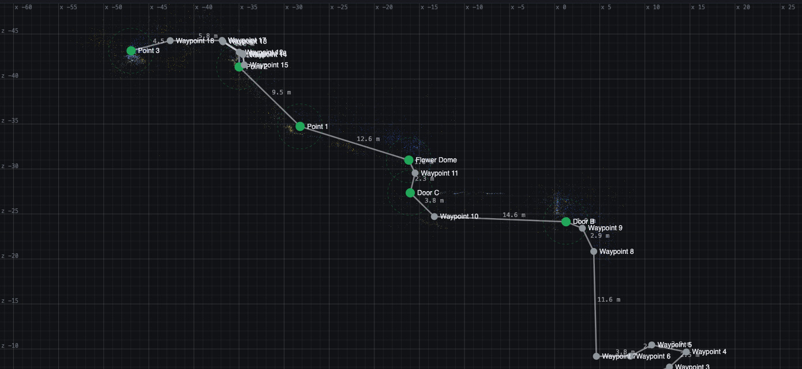
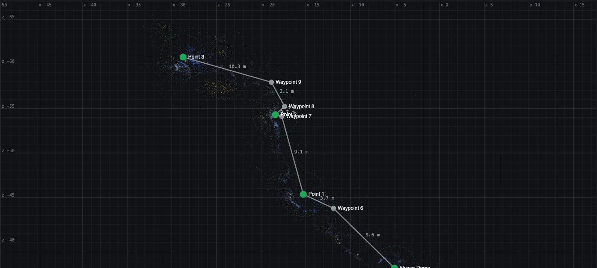
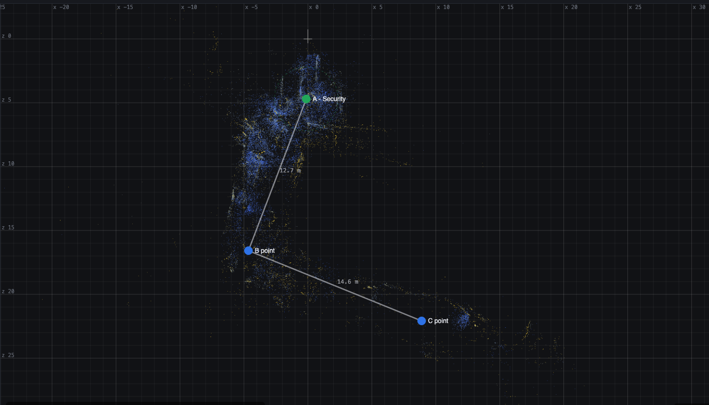
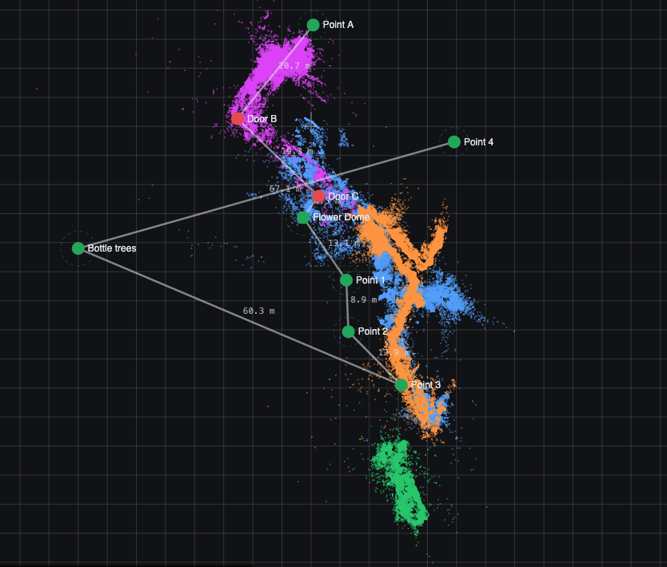

| Piece | What it does now |
|---|---|
| iPhone app TestFlight, build 10 |
|
| Android app GitHub release 0.1.1 |
Glasses-only version for phones without ARCore (tested on a Huawei Nova 5T). It shows smooth video from the AiSee glasses, uses Immersal to position, and has a live map and spoken announcements. |
| Web map editor aiseebin.flowsxr.com |
|
| Shared backend |
|
| Test | What happened | Result |
|---|---|---|
| Five Immersal scans as one map last week's scans, lined up by hand |
Our tester marked the tour points and then checked them. Linking the scans on the walk kept timing out on mobile data. | Not usable yet. The checks were 13–47 m off. A walk that matched all four scans gave new positions, but they still disagree with the marked points. |
| Phone scan "Flower Dome 1 Oct" Author mode, about 108 m, Point A to Point 3 |
Published on site after a couple of failed uploads. She then navigated to Points 1, 2 and 3 and back, and recorded her screen. | Worked well inside the dome. Each announcement came just before its point. Weak at A, B and C near the entrance. |
| Phone scan "Flower Dome 1 Oct map 2" the actual priority-lane route |
Retested a little later as it was getting darker. | Stuck on "Relocalizing" at the entrance. The barrier graphics and the change in light are likely causes. |
| Immersal entrance scan "Entrance Test Oct 1st" last week's scan; A, B and C placed by eye in the editor |
Loaded on the phone and tested at the entrance. | Found its position straight away and knew roughly where it was. The points themselves are rough, because they were placed by eye. |



